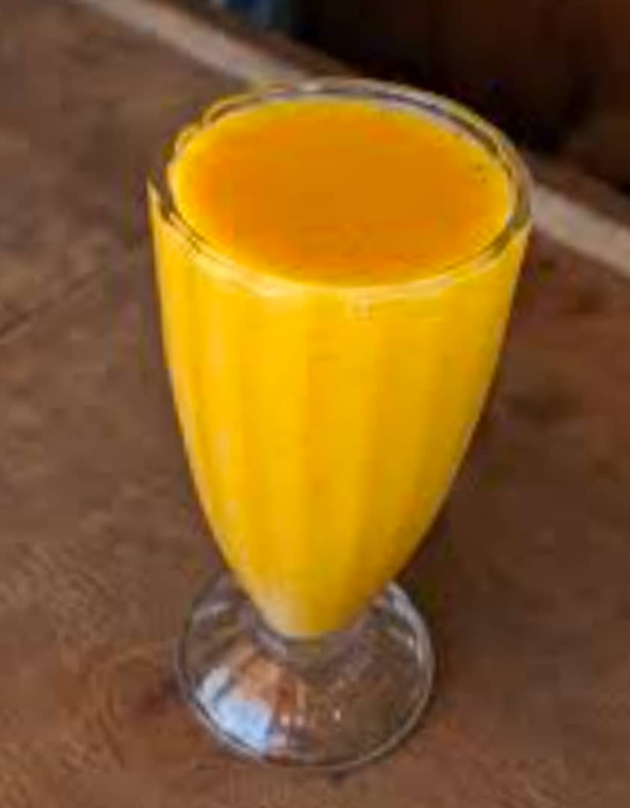

Tunapika chakula kitamu na safi kila siku . Karibu ujionee ladha halisi ya nyumbani!
Kuhusu Mama Hadija
Mama Hadija ameanza biashara ya mama lishe tangu mwaka 2015. Akiwa na uzoefu wa zaidi ya miaka 9, anahudumia wateja wa kila aina: wanafunzi wa vyuo, madereva bodaboda, makondakta, na wafanyakazi wa ofisi. Anajulikana kwa supu ya asubuhi, wali wa mchana, na ugali wa jioni wenye ladha ya kipekee.
Menu ya Kila Siku
Chakula cha Asubuhi
- Chapati Maharage - TSh 1,500

- Viazi na Chai ya Maziwa - TSh 2,000

- Supu ya Mbuzi na Ndizi - TSh 3,000

Chakula cha Mchana
- Wali Samaki - TSh 3,500

- Wali Maharage - TSh 2,000

- Wali Nyama - TSh 2,500

- Makande ya Nazi - TSh 2,000
Vinywaji
- Juice ya Embe / Ukwaju - TSh 1,000

- Soda / Maji - TSh 1,000
>